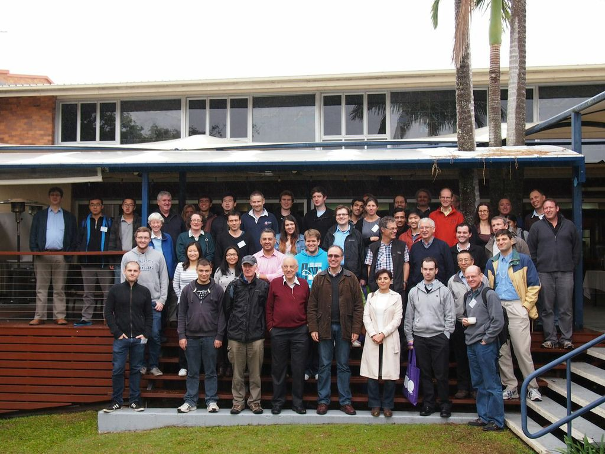

Australian Probability Conference 2026
22 – 25 June 2026
The University of Queensland, St Lucia campus, Brisbane, Australia
We are pleased to invite you to participate in the Australian Probability Conference 2026. The conference will bring together researchers in probability, stochastic processes, mathematical statistics, and their applications. We particularly encourage participation from HDR students and early career researchers.
Please fill in the expression of interest form if you would like to receive updates.
Abstract Submission (due: 1 May, 2026)
Please use the abstract submission form to submit your abstract.
Key Dates
- 1 April 2026 — Registration opens
- 1 May 2026 — Abstract submission due
- 15 May 2026 — Talk confirmation
- 22 – 25 June 2026 — Conference dates
Registration Fees
- Students — Free
- Members of APSIG — Free
- Members of AustMS (non-APSIG) — $50
- Non-members of AustMS — $60
Organising Committee
- Kazutoshi Yamazaki (UQ)
- Duy-Minh Dang (UQ)
- Kais Hamza (Monash)
- Ross McVinish (UQ)
- Yoni Nazarathy (UQ)
- Andriy Olenko (La Trobe)
- Slava Vaisman (UQ)
- Nan Ye (UQ)
Supported by
Contact
For more information please contact Kazutoshi Yamazaki: k.yamazaki@uq.edu.au.

ANZAP Workshop 2013, The University of Queensland
Some Previous Related Events
- 2025: UQ-Osaka Workshop on Financial Mathematics and Economics — The University of Queensland, Brisbane, Australia
- 2019: INFORMS Applied Probability Society Conference — Brisbane Convention Centre, Brisbane, Australia
- 2019: Queues, Modelling, and Markov Chains: A Workshop Honouring Prof. Peter Taylor — Brisbane, Australia
- 2019: Applied2 Probability — The University of Queensland, Brisbane, Australia
- 2019: 10th International Conference on Matrix-Analytic Methods in Stochastic Models (MAM10) — Tasmania, Australia
- 2019: 12th International Conference on Monte Carlo Methods and Applications (MCM2019) — Sydney, Australia
- 2017: Applied Probability @ The Rock — Adelaide, Australia. In honour of Prof. Phil Pollett.
- 2015: Australia New Zealand Applied Probability Workshop — Barossa Valley, Australia
- 2013: Australia New Zealand Applied Probability Workshop — The University of Queensland, Brisbane
- 2012: New Zealand Probability Workshop and Australia & New Zealand Applied Probability Workshop — The University of Auckland
- 1997: First Australia and New Zealand Applied Probability Workshop — Second Valley, South Australia